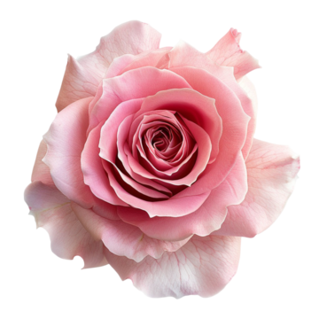
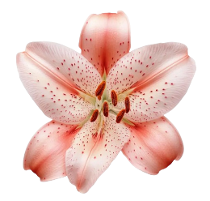

water_drop
Cambia el agua regularmente
Renueva el agua del florero cada 2 o 3 días para mantener las flores frescas y evitar la proliferación de bacterias.
Renueva el agua del florero cada 2 o 3 días para mantener las flores frescas y evitar la proliferación de bacterias.
Antes de colocar las flores en agua, corta aproximadamente 1 o 2 centímetros del tallo en un ángulo de 45°. Esto mejora la absorción.
Coloca las flores en un lugar fresco y luminoso, pero sin exposición directa al sol para prolongar su duración y color.
Las frutas maduras liberan gas etileno, un compuesto natural que acelera el proceso de marchitamiento de los pétalos.
Evita colocar los arreglos cerca de fuentes de calor como estufas, radiadores o corrientes de aire muy intensas.
Eliminar las hojas sumergidas y las partes deterioradas ayuda a conservar el agua limpia y el resto del arreglo sano.
Cada especie tiene sus propias necesidades para lucir espléndida



